Suppose that we augment the Basic Calculus of Variations Problem with an additional constraint of the form
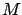
is a function from the same class as
Assume that a given curve  is an extremum.
What follows is a heuristic argument motivated by our earlier
derivation of the first-order
necessary condition for constrained optimality in the finite-dimensional case
(involving Lagrange multipliers).
Let us consider perturbed curves of the familiar form
is an extremum.
What follows is a heuristic argument motivated by our earlier
derivation of the first-order
necessary condition for constrained optimality in the finite-dimensional case
(involving Lagrange multipliers).
Let us consider perturbed curves of the familiar form
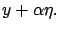
To be admissible, the perturbation
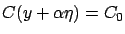
for all
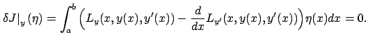
This conclusion can be summarized as follows:
![[*]](crossref.gif) . It also has a similar consequence, namely, that
there exists a constant
(a Lagrange multiplier)
such that
. It also has a similar consequence, namely, that
there exists a constant
(a Lagrange multiplier)
such that
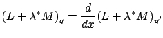
which amounts to saying that the Euler-Lagrange equation holds for the augmented Lagrangian
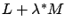
. In other words,
A closer inspection of the above argument reveals, however,
that we left a couple of gaps.
First, we did not justify the step of passing from (2.48)
to (2.49). In the finite-dimensional case, we had to make
the corresponding step of passing from (1.21)
to (1.22) which then gave (1.25); we
would need to construct a similar reasoning here, treating the integrals
in (2.48) as inner products of  with the functions in parentheses
(inner products in
with the functions in parentheses
(inner products in
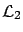
). Second, there was actually a more serious logical flaw: the condition (2.46) is necessary for the perturbation
It is also important to recall that in the finite-dimensional case studied
in Section 1.2.2, the first-order
necessary condition for constrained optimality in terms of Lagrange multipliers
is valid only when an additional technical assumption holds, namely,
the extremum must be a regular point of the constraint surface. This assumption
is needed to rule out degenerate situations (see Exercise 1.2);
in fact,
it enables precisely the sufficiency part
mentioned in the previous paragraph. It turns out that in the present case,
a degenerate situation
arises when the test curve  satisfies the constraint but all nearby
curves violate it. This can happen if
satisfies the constraint but all nearby
curves violate it. This can happen if  is an extremal of the constraint functional
,
i.e., satisfies the Euler-Lagrange equation for
. For example, consider the
length constraint
is an extremal of the constraint functional
,
i.e., satisfies the Euler-Lagrange equation for
. For example, consider the
length constraint
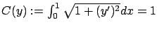
together with the boundary conditions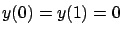
. Clearly,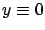
is the only admissible curve (it is the unique global minimum of the constraint functional), hence it automatically solves our constrained problem no matter what
We can now conjecture the following first-order necessary
condition for constrained optimality: If  is an extremum for the
constrained problem and is not an
extremal of the constraint functional
(i.e., does
not satisfy the Euler-Lagrange equation for
), then it is an extremal of
the augmented cost functional (2.50) for some
is an extremum for the
constrained problem and is not an
extremal of the constraint functional
(i.e., does
not satisfy the Euler-Lagrange equation for
), then it is an extremal of
the augmented cost functional (2.50) for some
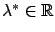
. We can also state this condition more succinctly, combining the nondegeneracy assumption and the conclusion into one statement: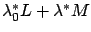
, where and are constants (not both 0). Indeed, this means that either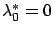
and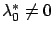
and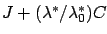
. The number is called the abnormal multiplier (it also has an analog in optimal control which will appear in Section 4.1).It turns out that this conjecture is correct. However, rather than fixing the above faulty argument, it is easier to give an alternative proof by proceeding along the lines of the second proof in Section 1.2.2.
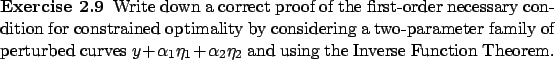
In the unconstrained case, as we noted earlier, the general solution of the second-order Euler-Lagrange differential equation depends on two arbitrary constants whose values are to be determined from the two boundary conditions. Here we have one additional parameter but also one additional constraint (2.45), so generically we still expect to obtain a unique extremal.
The generalization of the above necessary condition to problems with several constraints is straightforward: we need one Lagrange multiplier for each constraint (cf. Section 1.2.2). The multiple-degrees-of-freedom setting also presents no complications.
Similarly to the finite-dimensional case, Lagrange's original intuition
was to replace constrained minimization of  with
respect to
with
respect to  by
unconstrained minimization of
by
unconstrained minimization of
,
considering this augmented cost (which matches (2.50) except
for an additive constant) does not lead to a rigorous justification of
the necessary condition.
Equipped with the above necessary condition for the case of integral constraints as well as our previous experience with the Euler-Lagrange equation, we can now study Dido's isoperimetric problem and the catenary problem.